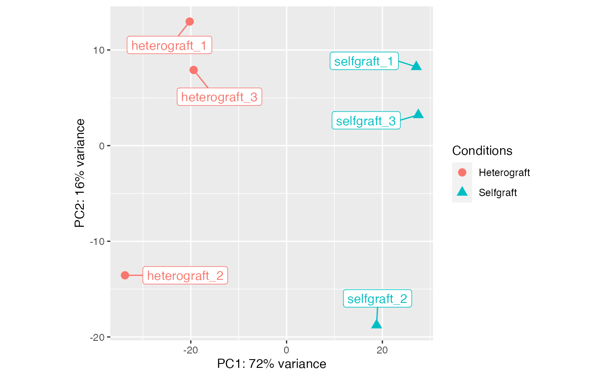
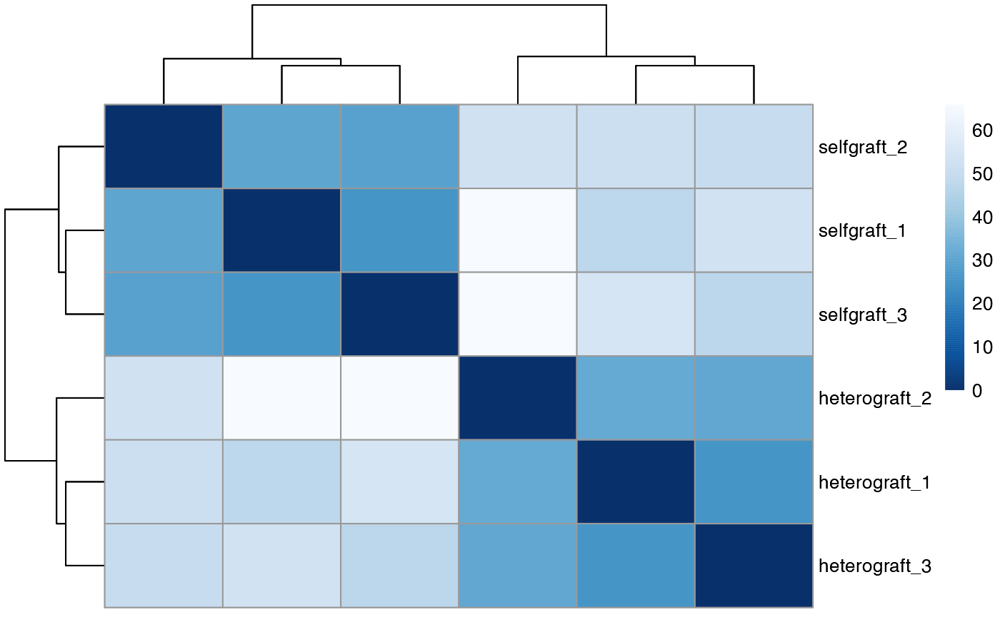
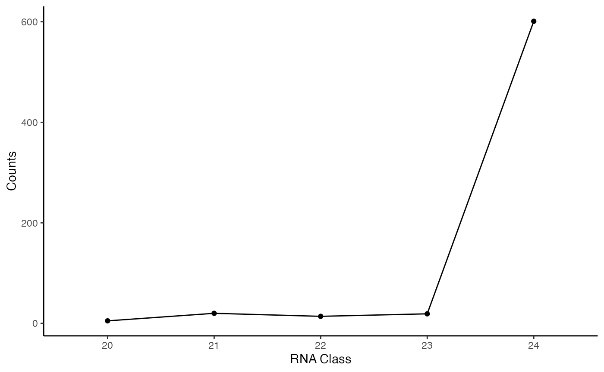
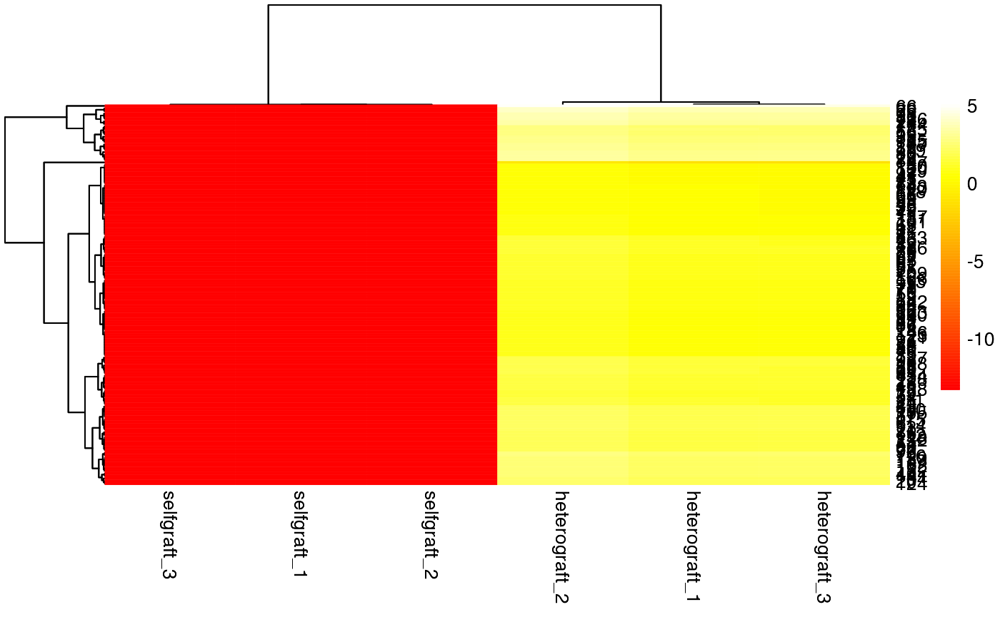
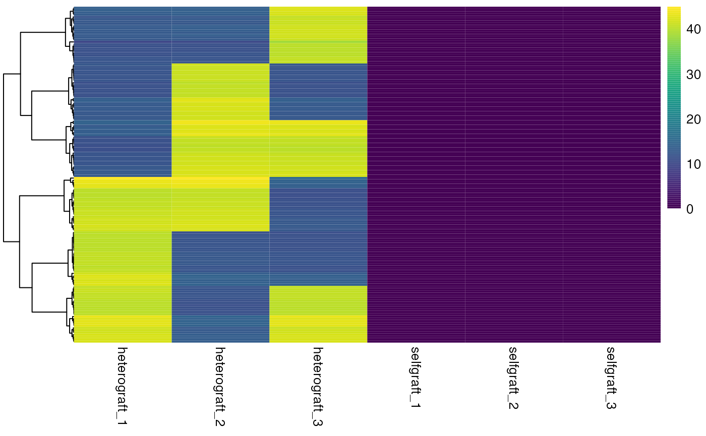

Analyse sRNA populations using mobileRNA
Katie Jeynes-Cupper, Marco Catoni
2023-09-14
Source:vignettes/mobileRNA_standard.Rmd
mobileRNA_standard.RmdIntroduction
In plants, systemic signalling is an elaborated molecular system which allows to coordinate plant development at the entire organism level, integrating and transmitting the information perceived from environment to distant organs. RNA molecules play a key role in this extensive network, both across short and long distances. Of which, small RNAs (sRNA) have been shown to be involved in post-transcriptional gene silencing and RNA-directed DNA methylation. Alterations such as these have been linked to changes in gene expression and phenotypical changes or trait. Here, we introduce the use of the mobileRNA R package as a tool for sRNAseq analysis to identify sRNA molecules in a biological system, regardless of whether the system is chimeric or not.
While, other RNA molecules, such as messenger RNA, are also renown be play a role in systemic signalling this tool currently focuses on the identification of local sRNA populations.
Method
Small RNAs (sRNAs) range from 20-24 nucleotides in length, but regardless of their short length the different groups have very specific roles in genetic regulation in plants. There are two key groups of interest; micro-RNAs (miRNAs) with a size between 21-22nt and small-interfering-RNAs (siRNAs) with a size of 24nt. miRNAs are renown to play a role in post-transcriptional regulation, while siRNAs are key components in the RNA-directed DNA methylation pathway. Therefore, understanding the population dynamics of sRNAs within your biological system could shed light on gene expression and DNA methylation patterns, bringing light to the molecular mechanisms underpinning biological processes.
The workflow can be utilise to explore sRNA populations in any species, and can be utilise further if you have a treatment vs. control experimental design. The workflow will aid the identification of unique sRNA populations and differences in sRNA abundances between treatment and control conditions.
This guide suggests mapping steps, analysis steps, and functional analysis steps.
Installation
The latest version of mobileRNA can be installed via GitHub using the devtools package:
if (!require("devtools")) install.packages("devtools")
devtools::install_github("KJeynesCupper/mobileRNA", ref = "main")
library(mobileRNA)Pre-processing
Assuming your sRNAseq raw samples have been cleaned to remove low quality reads and remove adapter sequences, we can align the samples to the genome assembly and detect sRNA clusters using the Linux ShortStack program (https://github.com/MikeAxtell/ShortStack).
Auto-Detection of sRNA Cluster
Step 1 - Cluster analysis with ShortStack
ShortStack \
--readfile <control_1.fastq> \
--genomefile <merged_reference.fa> \
--bowtie_cores 6 \
--mmap n \
--mismatches 0 \
--nohp \
--outdir <./output/directory>Step 2 - Build sRNA cluster list
Now, we collate all the sRNA loci information from each sample into a text file.
# location of step 1 output
folder <- "./output/directory/from/step/1/"
# name and location to save output file to (must be .txt)
save_folder <- "./output/directory/ClustersInfo.txt"
# names of samples (ie. folder names)
sample_names <- c("<treatment_1>", "<treatment_2>", "<control_1>","<control_2>")
loci_info <- RNAloci(files = folder,
out = save_folder,
samples = sample_names)Analysis
The aligned data can now be analysed in R, and the native population of sRNAs can be explored. This following analysis workflow is designed to facilitate a treatment vs control experimental design.
For the analysis we will use the semi-synthetic data, although there are two different genotypes in this analysis it can still be utilised to show different sRNA population dynamics.
Step 1: Import data
State the type of data (which is “sRNA” here), the location of the mapping results in your directory, and the sample names.
# Directory containing results
results_dir <- "<./output/directory/step2/>"
# Sample names and total number of reads, in the same order.
sample_names <- c("heterograft_1", "heterograft_2" , "heterograft_3",
"selfgraft_1", "selfgraft_2", "selfgraft_3")
sRNA_data <- RNAimport(input = "sRNA",
directory = results_dir,
samples = sample_names)
Step 2: Quality control
A handy step in the analysis is to assess the overall similarity and difference between samples within a conditions and between the conditions. This is to identify where most of the variation is introduced in the data set, as well as understanding whether the data set meets your expectations, quality-wise. It is expected that between the conditions, the sample replicates show enough variation to suggest that the replicates are from different groups. Here we will use the following methods: * Distribution of RNA classes within each sample * Principle component analysis (PCA) * Heatmap using Hierarchical clustering
This will show us how well samples within each condition cluster together, which may highlight outliers. Plus, to show whether our experimental conditions represent the main source of variation in the data set.
Principle component analysis (PCA)
Principal Component Analysis (PCA) is a useful technique to illustrate sample distance as it emphasizes the variation through the reduction of dimensions in the data set. Here, we introduce the function plotSamplePCA():
group <- c("Heterograft", "Heterograft", "Heterograft",
"Selfgraft", "Selfgraft", "Selfgraft")
plotSamplePCA(sRNA_data, group)
Hierarchical clustered heatmap to assess sample distance
Similarly, to a PCA plot, the plotSampleDistance() function undertakes hierarchical clustering with an unbiased log transformation to calculate sample distance and is plotted in the form of a heatmap.
plotSampleDistance(sRNA_data)
Plot the distribution of RNA classes within each sample
Explore the number of each RNA class identified within each sample using the RNAdistribution function which produces a table and plots the results. The results can be plotted as either a bar chart (style = “bar”) or a line graph (style = “line”) for each sample and can be shown in a bar chart facet (facet = TRUE) or in as a single line graph, where each line represents a sample (together=TRUE). Alternatively, the results can be plotted individually for each sample in either format.
sample_distribution <- RNAdistribution(sRNA_data,
style = "line",
together = FALSE)Lets look at the plot and the data:
# view plot
sample_distribution$plot
# view data
sample_distribution$data
#> Class heterograft_1 heterograft_2 heterograft_3 selfgraft_1 selfgraft_2
#> 1: 20 9 14 7 8 13
#> 2: 21 27 28 24 25 26
#> 3: 22 19 27 26 19 27
#> 4: 23 25 38 42 18 31
#> 5: 24 597 491 575 459 353
#> selfgraft_3
#> 1: 6
#> 2: 22
#> 3: 26
#> 4: 35
#> 5: 437Step 3: Calculate the consensus of each sRNA cluster
For a given sRNA cluster, each replicate has determined the class (20-24nt) based on the most abundant small RNA size. Replicates within the same condition are expected to class a given sRNA similarly.
The RNAdicercall() function is used to define the dicer class of a sRNA cluster based on the consensus across (specific) replicates.
# calculate dicercall consensus
sRNA_data_summary <- RNAdicercall(data = sRNA_data,
tidy=TRUE)
#> Calculating consensus dicercall based on information from all replicates...
#>
#> The consensus dicercall will be excluded in the case of a tie...
#>
#> Removing small RNA clusters with no consensus dicercall...
# plot results
plot_distribution <- RNAdistribution(data = sRNA_data_consensus,
consensus = TRUE)
# View figure
plot_distribution$plot
Step 4: Statistical analysis using DESeq2 or edgeR
Statistical analysis can be helpful to understand the differential abundances of sRNA clusters found within your system. Here we can utilize either the DESeq2 or edgeR algorithms to support your analysis, and can be used in the next steps.
# sample conditions in order within dataframe
groups <- c("Heterograft", "Heterograft", "Heterograft",
"Selfgraft", "Selfgraft", "Selfgraft")
## Differential analysis using the DEseq2 method
sRNA_DESeq2 <- RNAanalysis(data = sRNA_data_summary,
group = groups,
method = "DESeq2")
## Differential analysis using the edgeR method
sRNA_edgeR <- RNAanalysis(data = sRNA_data_summary,
group = groups,
method = "edgeR")This will add differential analysis values for each sRNA cluster to the working dataframe. We can then easily manipulate this data and plot it as heatmap.
Plot a volcano plot
A Volcano plots can be plotted to show the relationship between fold change and the adjusted p-value (i.e. FDR) across the dataset. Each point represents an individual sRNA cluster. Pointes are coloured according to their significance level thresholds (0.05, 0.01, and 0.001 or unchanged).
# plot with the top 10 clusters labelled
vol_plot <- plotVolcano(data = sRNA_DESeq2, labels = TRUE)
vol_plot$plotStep 5: Explore difference in sRNA abundances
When comparing treatment to control conditions, it might be the case that the same sRNA clusters are found within both yet there could be difference in the total abundance of the shared clusters. For instance, for a given sRNA cluster the samples in the treatment condition might have a greater abundance than the samples in the control condition. These difference could attribute to observed differences.
The statistical analysis calculated the log2FC values for each sRNA cluster by comparing the normalised counts between treatment and control. Here, a positive log2FC indicates an increased abundance of transcripts for a given sRNA cluster in the treatment compared to the control, while negative log2FC indicates decreased abundance of transcripts for a given sRNA cluster. The statistical significance of the log2FC is determined by the (adjusted) pvalue also calculated in the previous step.
Here we will filter the data to select sRNA clusters which are statistically significant, and then plot the results as a heatmap to compare the conditions.
# select only signifcant sRNAs
significant_sRNAs <- RNAsignificant(sRNA_DESeq2)
#plot
p1 <- plotHeatmap(significant_sRNAs, row.names = FALSE)Lets look at the plot:
p1$plot 
Step 6: Identify absolute sRNA population difference
Finally, the RNApopulation() function can be utilised to identify unique sRNA populations found in the treatment or control condition.
First lets look at the sRNA clusters unique to the treatment condition:
# select sRNA clusters only found in treatment & not in the control samples
treatment_reps <- c("heterograft_1", "heterograft_2" , "heterograft_3")
unique_treatment <- RNApopulation(data = sRNA_data_consensus,
conditions = treatment_reps)
# look at number of sRNA cluster only found in treatment
nrow(unique_treatment)
#> [1] 148Now, the sRNA clusters unique to the control condition:
# select sRNA clusters only found in control & not in the treatment samples
control_reps <- c("selfgraft_1", "selfgraft_2" , "selfgraft_3")
unique_control <- RNApopulation(data = sRNA_data_consensus,
conditions = control_reps)
# look at number of sRNA cluster only found in control
nrow(unique_control)
#> [1] 0Plotting heterograft-only sRNA populations
Here we located 148 sRNA clusters which are uniquely present to the heterografts, and not found in the self-graft controls. These results can be plotted as a distribution plot and heatmap.
# plot distribution of sRNA classes only found in treatment
p2 <- RNAdistribution(data = unique_treatment, style = "line", together = FALSE)
# plot heatmap of treatment-only sRNA clusters
p3 <- plotHeatmap(data = unique_treatment, row.names = FALSE)Lets look at the plots:
Here we can see the distribution of sRNA classes only found in treatment
p2$plot
Here we can compare the difference and similarities between the treatment and controls using a heatmap:
p3$plot
Step 6: Functional analysis
Target sequences
sRNAs target complementary sequences in the genome to mediate silencing via post-transcriptional or pre-transcriptional mechanisms. Here we will identify the complementary sequences matching the most abundant sRNA within a cluster.
target_sequences <- RNAsequences(unique_treatment)
#> The minimum number of matches required to form a consensus sRNA sequence is... 1
#> The consensus sRNA sequences will be choose at random in the case of a tieThis dataframe can be exported the results loaded into BLAST to identify regions within the genome that these complementary sequences are present. There are tools, such as TargetFinder or sRNATargetDigger, which use a predictive algorithm to identify the most likely locations in the genome where the sRNAs might target.
Lets export the data frame :
write.table(target_sequences, "./data/mobile_sequences.txt")Overlapping regions
Finally, we can identify regions in the genome annotation where the sRNA cluster overlaps with based on the chromosome and the start/end coordinated. This can be explored using two functions: [RNAattributes()] and [RNAfeatures()].
The RNAattributes function compared a genome annotation with the sRNA clusters and, if an overlap is present, the information is joined. This is accomplished by adding the the information from the annotation file to the sRNA working dataframe as additional columns.
attributes <- RNAattributes(data = unique_treatment,
annotation = "./annotation/origin_annotation.gff3")The RNAfeatures functions is similar to the RNAattributes function, but instead it returns either the absolute number or percentage of sRNA clusters which overlap with specific regions in the genome such as repeats, introns, exons, UTR and promoter regions. It could be helpful to subset your dataset to only explore a specific sRNA class, see [mobileRNA::RNAsubset()] for more information.
features <- RNAfeatures(data = unique_treatment,
annotation = "./annotation/origin_annotation.gff3",
repeats = "./annotation/origin_annotation_repeats.gff3")Session information
sessionInfo()
#> R version 4.0.2 (2020-06-22)
#> Platform: x86_64-apple-darwin17.0 (64-bit)
#> Running under: macOS 10.16
#>
#> Matrix products: default
#> BLAS: /Library/Frameworks/R.framework/Versions/4.0/Resources/lib/libRblas.dylib
#> LAPACK: /Library/Frameworks/R.framework/Versions/4.0/Resources/lib/libRlapack.dylib
#>
#> locale:
#> [1] en_GB.UTF-8/en_GB.UTF-8/en_GB.UTF-8/C/en_GB.UTF-8/en_GB.UTF-8
#>
#> attached base packages:
#> [1] stats graphics grDevices utils datasets methods base
#>
#> other attached packages:
#> [1] mobileRNA_0.99.8 BiocStyle_2.16.1
#>
#> loaded via a namespace (and not attached):
#> [1] colorspace_2.0-3 rprojroot_2.0.2
#> [3] DNAcopy_1.62.0 XVector_0.28.0
#> [5] GenomicRanges_1.40.0 fs_1.5.2
#> [7] rstudioapi_0.14 farver_2.1.0
#> [9] listenv_0.8.0 audio_0.1-10
#> [11] affyio_1.58.0 ggrepel_0.9.1
#> [13] bit64_4.0.5 AnnotationDbi_1.50.3
#> [15] fansi_1.0.2 codetools_0.2-18
#> [17] splines_4.0.2 Repitools_1.34.0
#> [19] doParallel_1.0.17 cachem_1.0.6
#> [21] geneplotter_1.66.0 knitr_1.42
#> [23] jsonlite_1.8.4 Rsamtools_2.4.0
#> [25] annotate_1.66.0 cluster_2.1.2
#> [27] vsn_3.56.0 pheatmap_1.0.12
#> [29] BiocManager_1.30.16 compiler_4.0.2
#> [31] Matrix_1.4-0 fastmap_1.1.0
#> [33] limma_3.44.3 cli_3.6.0
#> [35] beepr_1.3 htmltools_0.5.5
#> [37] tools_4.0.2 gtable_0.3.0
#> [39] glue_1.6.2 GenomeInfoDbData_1.2.3
#> [41] affy_1.66.0 dplyr_1.1.2
#> [43] Rcpp_1.0.8.3 Biobase_2.48.0
#> [45] jquerylib_0.1.4 pkgdown_2.0.7
#> [47] vctrs_0.6.2 Biostrings_2.56.0
#> [49] preprocessCore_1.50.0 progressr_0.10.0
#> [51] rtracklayer_1.48.0 iterators_1.0.14
#> [53] xfun_0.37 stringr_1.5.0
#> [55] globals_0.14.0 lifecycle_1.0.3
#> [57] gtools_3.9.2 XML_3.99-0.9
#> [59] future_1.24.0 edgeR_3.30.3
#> [61] zlibbioc_1.34.0 MASS_7.3-55
#> [63] scales_1.2.1 BSgenome_1.56.0
#> [65] ragg_1.2.2 parallel_4.0.2
#> [67] SummarizedExperiment_1.18.2 RColorBrewer_1.1-2
#> [69] yaml_2.3.5 curl_4.3.2
#> [71] pbapply_1.7-0 memoise_2.0.1
#> [73] ggplot2_3.4.2 sass_0.4.0
#> [75] stringi_1.7.6 RSQLite_2.2.10
#> [77] highr_0.9 genefilter_1.70.0
#> [79] S4Vectors_0.26.1 desc_1.4.1
#> [81] foreach_1.5.2 Ringo_1.52.0
#> [83] caTools_1.18.2 BiocGenerics_0.34.0
#> [85] BiocParallel_1.22.0 truncnorm_1.0-8
#> [87] GenomeInfoDb_1.24.2 rlang_1.1.0
#> [89] pkgconfig_2.0.3 systemfonts_1.0.4
#> [91] matrixStats_0.61.0 bitops_1.0-7
#> [93] Rsolnp_1.16 evaluate_0.15
#> [95] lattice_0.20-45 purrr_1.0.1
#> [97] labeling_0.4.2 GenomicAlignments_1.24.0
#> [99] bit_4.0.4 tidyselect_1.2.0
#> [101] parallelly_1.30.0 magrittr_2.0.3
#> [103] bookdown_0.32 DESeq2_1.28.1
#> [105] R6_2.5.1 IRanges_2.22.2
#> [107] gplots_3.1.1 generics_0.1.2
#> [109] DelayedArray_0.14.1 DBI_1.1.2
#> [111] withr_2.5.0 pillar_1.9.0
#> [113] gsmoothr_0.1.7 RPushbullet_0.3.4
#> [115] survival_3.3-1 RCurl_1.98-1.6
#> [117] future.apply_1.8.1 tibble_3.2.1
#> [119] crayon_1.5.0 KernSmooth_2.23-20
#> [121] utf8_1.2.2 rmarkdown_2.20
#> [123] locfit_1.5-9.4 grid_4.0.2
#> [125] data.table_1.14.2 blob_1.2.2
#> [127] SimDesign_2.10.1 digest_0.6.29
#> [129] xtable_1.8-4 tidyr_1.3.0
#> [131] textshaping_0.3.6 stats4_4.0.2
#> [133] munsell_0.5.0 viridisLite_0.4.0
#> [135] bslib_0.3.1 sessioninfo_1.2.2